ImageMagick v6 Examples --
 Fourier Transforms
Fourier Transforms
- Index
 ImageMagick Examples Preface and Index
ImageMagick Examples Preface and Index
 Introduction
The Fourier Transform
FFT/IFT In ImageMagick
Introduction
The Fourier Transform
FFT/IFT In ImageMagick
- Using FFT
- Magnitude or Phase Only Images
- FFT Spectrum Image
- HDRI FFT Images
- FFT as Real-Imaginary Components
Properties Of The Fourier Transform
- FFT of a Constant Image
- Effects of the DC Color
- Spectrum Of A Sine Wave Image
- Generating FFT Images Directly
- Spectrum Of A Rectangle Pattern Image
- Spectrum Of A Flat Circular Pattern Image
- Spectrum Of A Gaussian Circular Pattern Image
- Spectrum Of A Grid Pattern Image
Practical Applications
- Changing The Contrast Of An Image - Coefficient Rooting
- Blurring An Image - Low Pass Filtering
- Detecting Edges In An Image - High Pass Filtering
- Sharpening An Image - High Boost Filtering
- Noise Removal - Notch Filtering
Advanced Applications
FFT Multiplication and Division (low level examples - sub-page)
Introduction
One of the hardest concepts to comprehend in image processing is Fourier Transforms. There are two reasons for this. First, it is mathematically advanced and second, the resulting images, which do not resemble the original image, are hard to interpret. Nevertheless, utilizing Fourier Transforms can provide new ways to do familiar processing such as enhancing brightness and contrast, blurring, sharpening and noise removal. But it can also provide new capabilities that one cannot do in the normal image domain. These include deconvolution (also known as deblurring) of typical camera distortions such as motion blur and lens defocus and image matching using normalized cross correlation. It is the goal of this page to try to explain the background and simplified mathematics of the Fourier Transform and to give examples of the processing that one can do by using the Fourier Transform. If you find this too much, you can skip it and simply focus on the properties and examples, starting with FFT/IFT In ImageMagick For those interested, another nice simple discussion, including analogies to optics, can be found at An Intuitive Explanation of Fourier Theory. The lecture notes from Vanderbilt University School Of Engineering are also very informative for the more mathematically inclined: 1 & 2 Dimensional Fourier Transforms and Frequency Filtering. Other mathematical references include Wikipedia pages on Fourier Transform, Discrete Fourier Transform and Fast Fourier Transform as well as Complex Numbers. My thanks to Sean Burke for his coding of the original demo and to ImageMagick's creator for integrating it into ImageMagick. Both were heroic efforts. Many of the examples use a HDRI Version of ImageMagick which is needed to preserve accuracy of the transformed images. It is recommened that you compile a personal HDRI version if you want to make the most of these techniques.The Fourier Transform
An image normally consists of an array of 'pixels' each of which are defined by a set of values: red, green, blue and sometimes transparency as well. But for our purposes here we will ignore transparency. Thus each of the red, green and blue 'channels' contain a set of 'intensity' or 'grayscale' values. This is known as a raster image 'in the spatial domain'. This is just a fancy way of saying, the image is defined by the 'intensity values' it has at each 'location' or 'position in space'. But an image can also be represented in another way, known as the image's 'frequency domain'. In this domain, each image channel is represented in terms of sinusoidal waves. In such a 'frequency domain', each channel has 'amplitude' values that are stored in locations based not on X,Y 'spatial' coordinates, but on X,Y 'frequencies'. Since this is a digital representation, the frequencies are multiples of a 'smallest' or unit frequency and the pixel coordinates represent the indices or integer multiples of this unit frequency. This follows from the principal that "any well-behaved function can be represented by a superposition (combination or sum) of sinusoidal waves". In other words, the 'frequency domain' representation is just another way to store and reproduce the 'spatial domain' image. But how can an image be represented as a 'wave'?Images are Waves
Well if we take a single row or column of pixel from any image, and graph it (generated using "gnuplot" using the script "im_profile"), you will find that it
looks rather like a wave.
magick holocaust_tn.gif -colorspace gray miff:- |\
im_profile -s - image_profile.gif
|
![[IM Output]](../img_photos/holocaust_tn.gif)
![[IM Output]](image_profile.gif)
magick -size 20x150 gradient: -rotate 90 \
-function sinusoid 3.5,0,.4 wave.gif
im_profile -s wave.gif wave_profile.gif
|
magick -size 1x150 gradient: -rotate 90 \
-function sinusoid 3.5,0,.25,.25 wave_1.png
magick -size 1x150 gradient: -rotate 90 \
-function sinusoid 1.5,-90,.13,.15 wave_2.png
magick -size 1x150 gradient: -rotate 90 \
-function sinusoid 0.6,-90,.07,.1 wave_3.png
magick wave_1.png wave_2.png wave_3.png \
-evaluate-sequence add added_waves.png
|
![[IM Output]](wave_1_pf.gif)
![[IM Output]](wave_2_pf.gif)
![[IM Output]](added_waves_pf.gif)
2 Dimensional Waves in Images
The above shows one example of how you can approximate the profile of a single row of an image with multiple sine waves. However images are 2 dimensional, and as such the waves used to represent an image in the 'frequency domain' also needs to be two dimensional. Here is an example of one such 2 dimensional wave. The wave has a number of components to it. Image exampleUsing FFT/IFT In ImageMagick
Implementation Notes
ImageMagick makes use of the FFTW, Discrete Fourier Transform Library which requires images to be converted to and from floating point values (complex numbers), and was first implemented in IM version 6.5.4-3. To make it work as people generally expect for images, any non-square image or one with an odd dimension will be padded (using Virtual Pixels to be square of the maximum width or height of the image. To allow for proper centering of the 'FFT origin' in the center of the image, it is also forced to have an even (multiple of 2) dimensions. The consequence of this is that after applying the Inverse Fourier Transform, the image will need to be cropped back to its original dimensions to remove the padding. As the Fourier Transform is composed of "Complex Numbers", the result of the transform cannot be visualized directly. Therefore, the complex transform is separated into two component images in one of two forms.
![[Diagram]](../img_diagrams/complex_number.jpg)
Complex Number Real/Imaginary |
Real and Imaginary
The normal mathematical and numerical representation of the "Complex Numbers", is a pair of floating point values consisting of 'Real' (a) and 'Imaginary' (b) components. Unfortunately these two numbers may contain negative values and thus do not form viewable images. As such this representation can not be using in a normal version of ImageMagick, which would clip such images (see example below of the resulting effects. However when using a HDRI version of ImageMagick you can still generate, use, and even save this representation of a Fourier Transformed image. They may not be useful or even viewable as images in their own right, but you can still apply many mathematical operations to them. To generate this representation we use the 'plus' form of the operators, "+fft" and "+ift", and will be looked at in
detail below in FFT as Real-Imaginary Components.
![[Diagram]](../img_diagrams/polar_number.jpg)
Complex Polar Magnitude/Phase |
Magnitude and Phase
Direct numerical representation of the "Complex Numbers" is not very useful for image work. But by plotting the values onto a 2-dimensional plane, you can then magick the value into a Polar Representation consisting of 'Magnitude' (r) and 'Phase' (θ) components. This form is very useful in image processing, especially the magnitude component, which essentially specifies all the frequencies that go to make up the image. The 'Magnitude' component only contains positive values, and is just directly mapped into image values. It has no fixed range of values, though except for the DC or zero frequency color, the values will generally be quite small. As a consequence of this the magnitude image generally will appear to be very dark (practically black). By scaling the magnitude and applying a log transform of its intensity values usually will be needed to bring out any visual detail. The resulting 'log-transformed' magnitude image is known as the image's 'spectrum'. However remember that it is the 'magnitude' image, and not the 'spectrum' image, that should be used for the inverse transform. The DC (Short for "Direct Current") or "Zero Frequency", color that appears at the central 'origin' of the image, will be the average color value for the whole image. Also as input images not contain 'imaginary' components, the DC phase value will also always have zero phase, producing a pure-gray color. The 'Phase' component however ranges from -π to +π. This is first biased into a 0 to 2π range, then scaled into actual image values ranging from 0 to QuantumRange (as determined by the Compile Time Memory Quality). As a consequence of this, a zero phase will have a pure-gray value (as appropriate for each channel), while a negated phase will be a pure-black ('0') value. Note that a pure-white
('QuantumRange') is almost but not quite the same thing.
A Magnitude and Phase FFT representation of an image is generated using the
normal FFT operators, "+fft" and "+ift". This will be looked at first in Generating
FFT Images and its Inverse.
Generating FFT Images and its Inverse
(Magnitude and Phase)
Now, lets simply try a Fourier Transform round trip on the Lena image. That
is, we simply do the forward transform and immediately apply the inverse
transform to get back the original image. Then we will magick compare the results to
see the level of quality produced.
|
![[IM Output]](../img_photos/lena.png)
![[IM Text]](lena_roundtrip_cmp.txt.gif)
|
compare" program above
returns a measure of how different the two images are. In this case you can
see that the general difference is very small, of about 0.22%.
With a peak value difference in at least one pixel of about
("PAE", Peak Absolute Error) of just about 1%.
You can improve this by using a HDRI version of
ImageMagick. (See FFT with HDRI below).
Lets take a closer look at the FFT images that were generated in the above
round trip.
magick lena.png -fft +depth +adjoin lena_fft_%d.png |
|
Original |
|
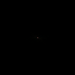
Magnitude |
![[IM Output]](lena_fft_1.png)
Phase |
-fft"
operator generated two images, the first image is the 'magnitude' component
(yes it is mostly black with a single colored dot in the middle), while the
second, almost random looking image, contains the 'phase' component.
PNG images can only store one image per file as such neither the "+adjoin" or the '%d'
in the output filename was actually needed, as IM would handle this.
However I include the options in the above for completeness, so as to make it
clear I am generating two separate image files, not one. See Writing a Multi-Image Sequence for more details.
As two images are generated the magnitude image (first of zeroth image) is
saved into "lena_fft_0.png" and phase image (second image) into
"lena_fft_1.png".
To prevent any chance of distortions resulting from saving FFT images, It is
best not to save them to disk at all, but hold them in memory while you
process the image.
If you must save then it is best to use the Magick File Format "MIFF" so as to preserve the image at its
highest quality (bit depth). This format can also save multiple images in
the one file. For script work you can also use the verbose "TXT" Enumerated Pixel Format.
DO NOT save them using "JPEG", "GIF" image
formats.
If you must save these images into files for actual viewing, such as for
a web browser, use the image format "PNG" with a "+depth" reset to the internal default, (as we do in these
examples). However it can only store one image per file.
The "TIFF" file format can also
be used though is not as acceptable for web browsers, though it does allow
multiple images per file.
|
MIFF", file format...
magick lena.png -fft +depth lena_fft.miff |
-write" (See Writing Images)...
magick lena.png -fft +depth \
\( -clone 0 -write lena_magnitude.png +delete \) \
\( -clone 1 -write lena_phase.png +delete \) \
null:
|
NULL:" image format to junk the two images which are still
preserved in memory for further processing.
And finally we again read in the two images again, so as to magick it back
into a normal 'spatial' image...
Both images generated by the FFT process are very sensitive to modification,
where even small changes can result greatly distorted results. As such it is
important to never save them in any image format that could distort those
values.
It important to remember that both images are needed when recovering the image
from the frequency domain. So it is no good saving one image, and junking the
other, if you plan on using them for image reconstruction.
![[IM Output]](lena_restored.png)
{kind=link}
{kind=link}
{kind=link}
{kind=link}
{kind=link}
{kind=link}
Magnitude or Phase Only Images
Finally, lets try reconstructing an image from just its magnitude component or just its phase component.
magick lena_fft_0.png -size 128x128 xc:'gray(50%)' \
-ift lena_magitude_only.png
magick -size 128x128 xc:gray1 lena_fft_1.png -ift lena_phase_only.png
|
|
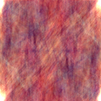
Magnitude Only |
![[IM Output]](lena_phase_only.png)
Phase Only |
{kind=link}
Frequency Spectrum Image
You will have noted that the magnitude image (the first or zeroth image), appears to be almost totally black. It isn't really, but to our eyes all the values are very very small. Such an image isn't really very interesting to look at to study, so lets enhance the result with a log transform to produce a 'frequency spectrum' image. This is done by applying a strong Evaluate Log Transform to a Normalized 'magnitude' image. Now we can see the detail in the spectrum version of the magnitude image. You may even see some specific colors in the spectrum image, but generally such colors are unimportant in a spectrum image. It is the overall intensity of each frequency, and the patterns they produce that is far more important. As such you may also like to gray-scale the spectrum image after enhancement. How much of a log enhancement you need to use depends on the image, so you should adjust it until you get the amount of detail you need to clearly see the pattern of the images frequency spectrum.{kind=link}
Alternatively you can use the following small shell script, to calculate
a log scaling factor to use for the specific magnitude image.
|
![[IM Output]](lena_spectrum_auto.png)
|
However remember that you can not use a spectrum image, for the inverse
"-ift" transform as it will
produce an overly bright image.
|
![[IM Output]](lena_roundtrip_fail.png)
|
HDRI FFT Images
When we mapped the results of the Fourier Transform into an image representation we scaled and converted the values from floating point "Complex Numbers", into integer image values. This naturally produced Rounding Errors, and other "Quantum" Effects, especially in the smaller lower frequency magnitudes. If accuracy is important in your image processing, then you will either need to use a Bit Quality (such as Q32 or Q64 bit versions of ImageMagick), or better still use a HDRI version ImageMagick so that the values are stored as floating point numbers. When using a HDRI version of IM with a Magnitude and Phase representation of the Fourier transform, the magnitude component will still all be positive values, and as such can still be used as shown above, just much more exactly. The phase component will however still be biased and scaled, as previously shown. In other words, the magnitude and phase representation in HDRI is exactly the same, just much more accurate.For example here I use a HDRI version ImageMagick to generate another 'round trip' conversion of an image.
{kind=link}
![[IM Text]](lena_roundtrip_hdri_cmp.txt.gif)
|
|
|
Floating point compatible file formats include "MIFF", "TIFF", "PFM" and
the HDRI specific "EXR" file format. However you may need to
set "-define quantum:format=floating-point" for it to work.
|
FFT as Real-Imaginary Components
So far we have only look at the 'Magnitude' and a 'Phase' representation of Fourier Transformed images. But if you have compiled a HDRI version of IM, you can also process images using floating point 'Real' and 'Imaginary', components. This is done by using the 'plus' versions of the options "+fft" and "+ift".
For example here I used a HDRI version of IM to
also perform a 'round trip' FFT of an image, but this time generating
Real/Imaginary images.
| 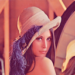 |
{kind=link}
![[IM Text]](lena_roundtrip_ri_cmp.txt.gif)
|
You must use a HDRI version when you use the plus forms to generate
Real/Imaginary FFT images. If you don't, about 1/2 the values will be zero,
resulting in an image that looks 'dirty'. For example...
|
![[IM Output]](lena_roundtrip_ri_bad.png)
|
|
![[IM Output]](lena_real_only.png)
Real Only |
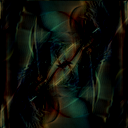
Imaginary Only |
{kind=link}
Properties Of The Fourier Transform
FFT of a Constant Image
Lets demonstrate some of these properties. First lets simply take a constant color image and get its magnitude.magick -size 128x128 xc:gold constant.png magick constant.png -fft +delete constant_magnitude.png |
![[IM Output]](constant.png)
![[IM Output]](constant_magnitude.png)
To see this single pixel more clearly lets also magnify that area of the
image...
|
![[IM Output]](constant_dc_zoom.gif)
|
| While the 'phase' of the DC value is not important, it should always be a 'zero' angle (a phase color value of 50% gray). If it is not set to 50% gray, the DC value will have a 'unreal' component, and its value modulated by the angle given. |
Effects of the DC Color
In a more typical non-constant image, the DC value is the average color of the image. The color you should generally get if you had completely blurred, averaged, or resized the image down to a single pixel or color. For example lets extract the DC pixel from the FFT of the "Lena" image.
|
![[IM Output]](lena_dc_zoom.gif)
For example lets replace that 'dark pink' DC pixel with some other color
such as the more orange color 'tomato'...
|
![[IM Output]](lena_dc_replace.png)
|
Spectrum Of A Sine Wave Image
Next, lets take a look at the spectrum from a single sine (or cosine) wave image with 4 cycles across the image
magick -size 128x129 gradient: -chop 0x1 -rotate 90 -evaluate sine 4 \
sine4.png
magick sine4.png -fft +delete \
-auto-level -evaluate log 100 sine4_spectrum.png
|
![[IM Output]](sine4.png)
![[IM Output]](sine4_spectrum.png)
The unusual creation of the gradient image in the above is necessary to
ensure that the resulting sine wave image tiles perfectly across the image.
A normal "gradient:" image
does not perfectly tile, so neither does a sine wave generated from it.
A FFT transform of such an im-perfect tile, will result in an array of
undesired harmonics, rather than single 'dots' in the Fourier Transform
Spectrum.
See Generating the Perfect
Gradient for more details about this problem.
|
magick -size 128x129 gradient: -chop 0x1 -rotate 90 -evaluate sine 16 \
-write sine16.png -fft -delete 1 \
-auto-level -evaluate log 100 sine16_spectrum.png
|
![[IM Output]](sine16.png)
![[IM Output]](sine16_spectrum.png)
Small becomes large and large becomes small.
This is one of the most vital aspects to remember when dealing with Fourier
Transforms, as it is the key to removing noise (small features) from an image,
while preserving the overall larger aspects of the image.
Lets take a closer look at these three 'frequencies' by plotting their original
magnitudes (not the logarithmic spectrum).
|
![[IM Output]](sine16_magnitude_pf.png)
|
| During generation the FFT algorithm only generates the left half the images. The other half is generated by rotations and duplication of the generated data. When converting Frequency Domain images back to a Spatial Domain Image, the algorithm again only looks at the left half of the image. The right half is completely ignored, as it is only a duplicate. As such when (in later examples) you 'notch filter' a FFT magnitude image, you only really need to filter the left hand side of the magnitude image. You can save yourself some work by also ignoring the right half. However for clarity I will 'notch' both halves. |
Generating FFT Images Directly
Now we can use the above information to actually generate an image of a sine wave. All you need to do is create a black and 50% gray image pair, and add 'dots' with the appropriate magnitude, and phase. For example...
magick -size 128x128 xc:black \
-draw 'fill gray(50%) color 64,64 point' \
-draw 'fill gray(50%) color 50,68 point' \
-draw 'fill gray(25%) color 78,60 point' \
generated_magnitude.png
magick generated_magnitude.png \
-auto-level -evaluate log 3 generated_spectrum.png
magick -size 128x128 xc:gray50 generated_phase.png
magick generated_magnitude.png generated_phase.png \
-ift generated_wave.png
|
{kind=link}
![[IM Output]](generated_phase.png)
{kind=link}
| Actually only the first (left most) 'gray25' dot was needed to generate the sine wave as the IFT transform completely ignores the right half of the image as this should simply be a rotational mirror of the left half. |
| The phase of the DC value must have a 'zero angle' (50% gray color). If you don't ensure that is the case the DC color value will be modulated by its non-zero phase, producing a darker, possibly 'clipped' image. |
| The other pixels in the phase can be any grey level you like, and will effectively 'roll' the sine wave across the image. Again only the phase of the left most dot actually matters. The right hand side is completely ignored. Just ensure the center DC phase pixel remains 50% grey. |
FUTURE: Perlin Noise Generator using FFT
Spectrum of a Vertical Line
Show the FFT spectrum of a thin and thick line Demonstrate how small features become 'big' and big features become 'small' in the FFT of the image. Link that back to the sine wave which could be regarded as a 'line' with a single harmonic. Rotate the lineSpectrum of a Rectangle Pattern Image
Next, lets look at the spectrum of white rectangle of width 8 and height 16 inside a black background.
magick -size 8x16 xc:white -gravity center \
-gravity center -background black -extent 128x128 rectangle.png
magick rectangle.png -fft +delete \
-auto-level -evaluate log 100 rect_spectrum.png
|
![[IM Output]](rectangle.png)
![[IM Output]](rect_spectrum.png)
magick rectangle.png -rotate 45 -gravity center -extent 128x128 \
-write rect_rot45.png -fft -delete 1 \
-auto-level -evaluate log 100 rect_rot45_spectrum.png
|
{kind=link}
![[IM Output]](rect_rot45_spectrum.png)
magick rectangle.png -rotate 45 -geometry +30+20 -extent 128x128 \
-write rect_rot45off.png -fft -delete 1 \
-auto-level -evaluate log 100 rect_rot45off_spectrum.png
|
{kind=link}
![[IM Output]](rect_rot45off_spectrum.png)
Spectrum Of A Flat Circular Pattern Image
Next, lets look at the spectrum from an image with a white, flat circular pattern, in one case with diameters of 12 (radius 6) and in another case with diameter of 24 (radius 12).
magick -size 128x128 xc:black -fill white \
-draw "circle 64,64 64,70" -write circle6.png -fft -delete 1 \
-auto-level -evaluate log 100 circle6_spectrum.png
magick -size 128x128 xc:black -fill white \
-draw "circle 64,64 64,76" -write circle12.png -fft -delete 1 \
-auto-level -evaluate log 100 circle12_spectrum.png
|
{kind=link}
{kind=link}
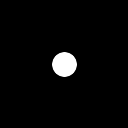
{kind=link}
{kind=link}
Spectrum Of A Gaussian Pattern Image
Next, lets look at the spectrum from two images, each with a white Gaussian circular pattern having sigmas of 8 and 16, respectively
magick -size 128x128 xc:black -fill white \
-draw "point 64,64" -gaussian-blur 0x8 -auto-level \
-write gaus8.png -fft -delete 1 \
-auto-level -evaluate log 1000 gaus8_spectrum.png
im_profile -s gaus8.png gaus8_pf.gif
im_profile -s gaus8_spectrum.png gaus8_spectrum_pf.gif
|
|
|
![[IM Output]](gaus8_spectrum.png)
| |
| 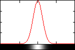 |
| 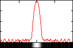 |
{kind=link}
{kind=link}
{kind=link}
magick -size 128x128 xc:black -fill white \
-draw "point 64,64" -gaussian-blur 0x16 -auto-level \
-write gaus16.png -fft -delete 1 \
-auto-level -evaluate log 1000 gaus16_spectrum.png
im_profile -s gaus16.png gaus16_pf.gif
im_profile -s gaus16_spectrum.png gaus16_spectrum_pf.gif
|
|
|
![[IM Output]](gaus16_spectrum.png)
| |
![[IM Output]](gaus16_pf.gif)
|
| 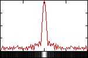 |
{kind=link}
{kind=link}
Spectrum Of A Grid Pattern Image
Next, lets transform an image containing just a set of grid lines spaced 16x8 pixels apart.
magick -size 16x8 xc:white -fill black \
-draw "line 0,0 15,0" -draw "line 0,0 0,7" \
-write mpr:tile +delete \
-size 128x128 tile:mpr:tile \
-write grid16x8.png -fft -delete 1 \
-auto-level -evaluate log 100000 grid16x8_spectrum.png
|
![[IM Output]](grid16x8.png)
![[IM Output]](grid16x8_spectrum.png)
More Spectrum Information
Here are some links if you like to know more about spectrum images and there properties.- Wikipedia: Fourier Transform
- Fred Weinhaus, Properities of a Fourier Transform
- Wolfram MathWorld: Fourier Transform
Practical Applications
OK, now that we have covered the basics, what are the practical applications of using the Fourier Transform? Some of the things that can be done include: 1) increasing or decreasing the contrast of an image, 2) blurring, 3) sharpening, 4) edge detection and 5) noise removal.Changing The Contrast Of An Image - Coefficient Rooting
One can adjust the contrast in an image by performing the forward Fourier transform, raising the magnitude image to a power and then using that with the phase in the inverse Fourier transform. To increase, the contrast, one uses an exponent slightly less than one and to decrease the contrast, one uses an exponent slightly greater than one. So lets first increase the contrast on the Lena image using an exponent of 0.9 and then decrease the contrast using an exponent of 1.1.
magick lena.png -fft \
\( -clone 0 -evaluate pow 0.9 \) -delete 0 \
+swap -ift lena_plus_contrast.png
magick lena.png -fft \
\( -clone 0 -evaluate pow 1.1 \) -delete 0 \
+swap -ift lena_minus_contrast.png
|
{kind=link}
![[IM Output]](lena_minus_contrast.png)
Blurring An Image - Low Pass Filtering
One of the most important properties of Fourier Transforms is that convolution in the spatial domain is equivalent to simple multiplication in the frequency domain. In the spatial domain, one uses small, square-sized, simple convolution filters (kernels) to blur an image with the -convole option. This is called a low pass filter. The simplest filter is just an an equally-weighted, square array. That is all the values are ones, which are normalized by dividing by their sum before applying the convolution. This is equivalent to a local or neighborhood average. Another low pass filter is the Gaussian-weighted, circularly shaped filter provided by either -gaussian-blur or -blur. In the frequency domain, one type of low pass blurring filter is just a constant intensity white circle surrounded by black. This would be similar to a circularly shaped averaging convolution filter in the spatial domain. However, since convolution in the spatial domain is equivalent to multiplication in the frequency domain, all we need do is perform a forward Fourier transform, then multiply the filter with the magnitude image and finally perform the inverse Fourier transform. We note that a small sized convolution filter will correspond to a large circle in the frequency domain. Multiplication is carried out via -composite with a -compose multiply setting. So lets try doing this with two sizes of circular filters, one of diameter 40 (radius 20) and the other of diameter 28 (radius 14).
magick -size 128x128 xc:black -fill white \
-draw "circle 64,64 44,64" circle_r20.png
magick lena.png -fft \
\( -clone 0 circle_r20.png -compose multiply -magick composite \) \
\( +clone -evaluate log 10000 -write lena_blur_r20_spec.png +delete \) \
-swap 0 +delete -ift lena_blur_r20.png
magick -size 128x128 xc:black -fill white \
-draw "circle 64,64 50,64" circle_r14.png
magick lena.png -fft \
\( -clone 0 circle_r14.png -compose multiply -magick composite \) \
\( +clone -evaluate log 10000 -write lena_blur_r14_spec.png +delete \) \
-swap 0 +delete -ift lena_blur_r14.png
|
|
|
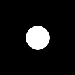
![[IM Output]](lena_blur_r20_spec.png)
![[IM Output]](lena_blur_r20.png)
|
![[IM Output]](circle_r14.png)
![[IM Output]](lena_blur_r14_spec.png)
|
{kind=link}
{kind=link}
magick circle_r20.png -blur 0x4 -auto-level gaussian_r20.png
magick lena.png -fft \
\( -clone 0 gaussian_r20.png -compose multiply -magick composite \) \
\( +clone -evaluate log 10000 -write lena_gblur_r20_spec.png +delete \) \
-swap 0 +delete -ift lena_gblur_r20.png
magick circle_r14.png -blur 0x4 -auto-level gaussian_r14.png
magick lena.png -fft \
\( -clone 0 gaussian_r14.png -compose multiply -magick composite \) \
\( +clone -evaluate log 10000 -write lena_gblur_r14_spec.png +delete \) \
-swap 0 +delete -ift lena_gblur_r14.png
|
|
|
![[IM Output]](gaussian_r20.png)
![[IM Output]](lena_gblur_r20_spec.png)
![[IM Output]](lena_gblur_r20.png)
|
|
|
{kind=link}
{kind=link}
{kind=link}
Detecting Edges In An Image - High Pass Filtering
In the spatial domain, high pass filters that extract edges from an image are often implemented as convolutions with positive and negative weights such that they sum to zero. Things are much simpler in the frequency domain. Here a high pass filter is just the negated version of the low pass filter. That is where the low pass filter is bright, the high pass filter is dark and vice versa. So in ImageMagick, all we need do is to -negate the low pass filter image. So lets apply high pass filters to the Lena image using a circle image. And then again using a purely gaussian curve.
magick circle_r14.png -negate circle_r14i.png
magick lena.png -fft \
\( -clone 0 circle_r14i.png -compose multiply -magick composite \) \
\( +clone -evaluate log 10000 -write lena_edge_r14_spec.png +delete \) \
-delete 0 +swap -ift -normalize lena_edge_r14.png
magick -size 128x128 xc: -draw "point 64,64" -blur 0x14 \
-auto-level gaussian_s14i.png
magick lena.png -fft \
\( -clone 0 gaussian_s14i.png -compose multiply -magick composite \) \
\( +clone -evaluate log 10000 -write lena_edge_s14_spec.png +delete \) \
-delete 0 +swap -ift -normalize lena_edge_s14.png
|
|
|
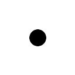
![[IM Output]](lena_edge_r14.png)
|
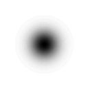
![[IM Output]](lena_edge_s14_spec.png)
![[IM Output]](lena_edge_s14.png)
|
{kind=link}
{kind=link}
{kind=link}
Sharpening An Image - High Boost Filtering
The simplest way to sharpen an image is to high pass filter it (without the normalization stretch) and then blend it with the original image.
magick lena.png -fft \
\( -size 128x128 xc: -draw "point 64,64" -blur 0x14 -auto-level \
-clone 0 -compose multiply -magick composite \) \
-delete 0 +swap -ift \
lena.png -compose blend -set option:compose:args 100x100 -magick composite \
lena_sharp14.png
|
![[IM Output]](lena_sharp14.png)
Noise Removal - Notch Filtering
Many noisy images contain some kind of patterned noise. This kind of noise is easy to remove in the frequency domain as the patterns show up as either a pattern of a few dots or lines. Recall a simple sine wave is a repeated pattern and shows up as only 3 dots in the spectrum. In order to remove this noise, one simply, but unfortunately, has to manually mask (or notch) out the dots or lines in the magnitude image. We do this by transforming to the frequency domain, create a grayscale version of the spectrum, mask the dots or lines, threshold it, multiply the binary mask image with the magnitude image and then transform back to the spatial domain. Lets try this on the clown image, which contains a diagonally striped dither-like pattern. First we transform the clown image to create its magnitude and phase images.
magick clown_orig.jpg -fft \
\( +clone -write clown_phase.png +delete \) +delete \
-write clown_magnitude.png -colorspace gray \
-auto-level -evaluate log 100000 clown_spectrum.png
|
![[IM Output]](clown_orig.jpg)
Original |
|
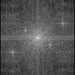
Spectrum |
![[IM Output]](clown_phase.png)
Phase |
{kind=link}
magick clown_spectrum_edited.png clown_spectrum.png \
-compose difference -magick composite \
-threshold 0 -negate clown_spectrum_mask.png
|
![[IM Output]](clown_spectrum_edited.png)
![[IM Output]](../img_photos/clown_spectrum_mask.png)
magick clown_magnitude.png clown_spectrum_mask.png \
-compose multiply -magick composite \
clown_phase.png -ift clown_filtered.png
|
![[IM Output]](clown_filtered.png)
A very good result. But we can do even better.
As you saw in the previous examples, simple 'circles' are not particularly
friendly to a FFT image, so lets blur the mask slightly...
|
![[IM Output]](clown_mask_blurred.png)
|
And filter the clown, this time re-generating the FFT images in memory.
|
{kind=link}
We can even take the difference between the original and the result to create
an image of the areas where noise was removed.
|
![[IM Output]](clown_noise.png)
|
magick twigs.jpg -fft +delete -colorspace gray \
-auto-level -evaluate log 100000 twigs_spectrum.png
|
![[IM Output]](twigs.jpg)
![[IM Output]](twigs_spectrum.png)
magick twigs_spectrum_edited.png twigs_spectrum.png \
-compose difference -magick composite \
-threshold 0 -negate twigs_spectrum_mask.png
|
![[IM Output]](twigs_spectrum_edited.png)
![[IM Output]](../img_photos/twigs_spectrum_mask.png)
magick twigs.jpg -fft \
\( -clone 0 twigs_spectrum_mask.png -compose multiply -magick composite \) \
-swap 0 +delete -ift twigs_filtered.png
|
{kind=link}
magick twigs.jpg twigs_filtered.png -compose difference -magick composite \
-normalize twigs_noise.png
|
![[IM Output]](twigs_noise.png)